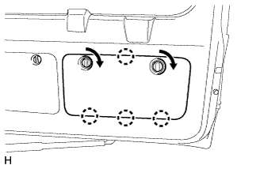
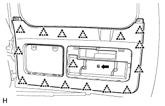
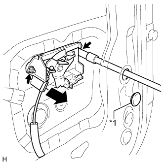
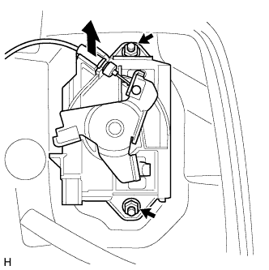
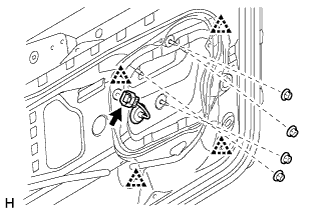

НАРУЖНАЯ НАКЛАДКА ДВЕРИ БАГАЖНОГО ОТДЕЛЕНИЯ (для моделей с кронштейном запасного колеса) > СНЯТИЕ |
| 1. СНИМИТЕ ЦЕНТРАЛЬНУЮ ОБЛИЦОВКУ ДВЕРИ БАГАЖНОГО ОТДЕЛЕНИЯ |
 |
Освободите 4 фиксатора и снимите центральную облицовку двери багажного отделения.
| 2. СНИМИТЕ ЛЕВУЮ БОКОВУЮ ОБЛИЦОВКУ ДВЕРИ БАГАЖНОГО ОТДЕЛЕНИЯ |
 |
Освободите 2 фиксатора и захват и снимите боковую облицовку двери багажного отделения.
| 3. СНИМИТЕ ПРАВУЮ БОКОВУЮ ОБЛИЦОВКУ ДВЕРИ БАГАЖНОГО ОТДЕЛЕНИЯ |
 |
Освободите 2 фиксатора и захват и снимите боковую облицовку двери багажного отделения.
| 4. СНИМИТЕ ОБЛИЦОВОЧНУЮ НАКЛАДКУ ДВЕРИ БАГАЖНОГО ОТДЕЛЕНИЯ |
|  |
Снимите облицовочную накладку двери багажного отделения, как показано на рисунке.
| 5. СНИМИТЕ ВЕРХНЮЮ ПАНЕЛЬ ЯЩИКА ДЛЯ ИНСТРУМЕНТОВ В СБОРЕ |
 |
Снимите верхнюю панель ящика для инструментов в сборе, как показано на рисунке.
| 6. СНИМИТЕ ЯЩИК ДЛЯ ИНСТРУМЕНТОВ |
 |
Освободите 2 захвата и снимите ящик для инструментов.
| 7. СНИМИТЕ ДЕРЖАТЕЛЬ ВНУТРЕННЕЙ РУЧКИ ДВЕРИ БАГАЖНОГО ОТДЕЛЕНИЯ (для моделей с противоположно расположенными сиденьями) |
 |
Выверните винт.
Освободите 5 захватов и снимите оправу внутренней ручки двери багажного отделения.
| 8. СНИМИТЕ ПАНЕЛЬ ОБЛИЦОВКИ ДВЕРИ БАГАЖНОГО ОТДЕЛЕНИЯ В СБОРЕ |
 |
Отцепите захват и снимите крышку.
 |
Выверните винт.
Для моделей без кронштейна запасного колеса на двери багажного отделения:
 |
Выверните болт.
Освободите 15 фиксаторов и снимите облицовочную панель двери багажного отделения.
Для моделей с кронштейном запасного колеса на двери багажного отделения:
|  |
Выверните болт.
Освободите 16 фиксаторов и снимите облицовочную панель двери багажного отделения.
Для моделей с противоположно расположенными сиденьями:
 |
Выверните винт и болт.
Освободите 15 фиксаторов и снимите облицовочную панель двери багажного отделения.
| 9. СНИМИТЕ ВНУТРЕННЮЮ РУЧКУ ДВЕРИ БАГАЖНОГО ОТДЕЛЕНИЯ В СБОРЕ (для моделей с противоположно расположенными сиденьями) |
 |
Отсоедините направляющую.
Освободите захваты и снимите внутреннюю ручку.
Отсоедините 2 троса от внутренней ручки в сборе.
| 10. СНИМИТЕ КРЫШКУ ТЕХНОЛОГИЧЕСКОГО ОТВЕРСТИЯ ДВЕРИ БАГАЖНОГО ОТДЕЛЕНИЯ |
 |
Снимите крышку технологического отверстия.
| 11. СНИМИТЕ ЛЕВУЮ НАРУЖНУЮ РУЧКУ ДВЕРИ БАГАЖНОГО ОТДЕЛЕНИЯ |
Для моделей с кронштейном запасного колеса на двери багажного отделения:
|  |
Удалите пробку отверстия.
| *1 | Пробка отверстия |
Отверните 2 гайки и снимите наружную ручку двери багажного отделения.
Отсоедините трос.
Для моделей без кронштейна запасного колеса на двери багажного отделения:
|  |
Отверните 2 гайки и снимите наружную ручку двери багажного отделения.
Отсоедините трос.
| 12. СНИМИТЕ НАРУЖНУЮ НАКЛАДКУ ДВЕРИ БАГАЖНОГО ОТДЕЛЕНИЯ В СБОРЕ |
|  |
Отсоедините разъем и отверните 4 гайки.
Освободите 4 фиксатора и снимите наружную накладку двери багажного отделения.